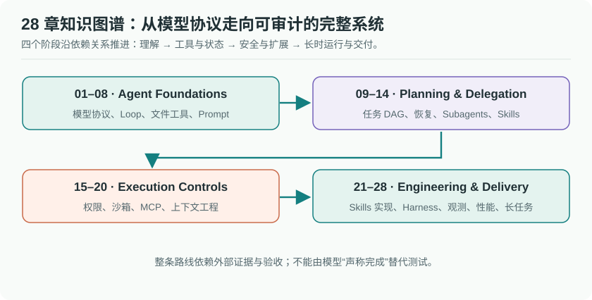
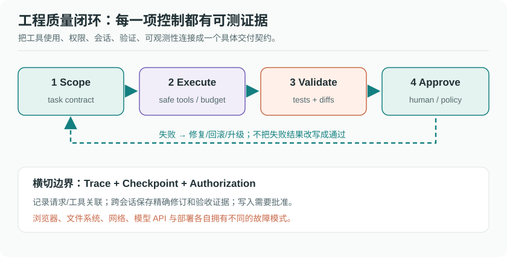

知识图谱与工程验收：从 Agent Loop 到可审计的交付系统
将 28 章整理为四个相互依赖的工程阶段，并用任务契约、工具安全、状态恢复、追踪、测试和审批定义真正的系统完成标准。
一个 Coding Agent 到底是什么
Coding Agent 不是一个拥有“写代码能力”的单独模型。它是模型提出行动、Harness 管理状态、工具读取或修改环境、权限系统约束副作用、测试与人类判断结果的完整控制循环。只有把这些环节明确分层，才能解释为什么模型回答合理但任务仍失败，或者为什么工具执行成功但最终代码依然不正确。

学习时可以把每一章都放回一个因果问题：谁决定下一步？谁能执行？怎样限制权限？运行状态存在哪里？什么证据才能宣布成功？一项设计如果无法回答这五个问题，就还没有形成可靠的 Agent 工程机制。
28 章完整导航：每个阶段解决一类失败
| 阶段 | 章节 | 关键内容 | 完成时应具备的能力 |
|---|---|---|---|
| 模型和协议 | 01–05 | AI Coding Agent 发展、可靠研究、最小 Loop、Harness 分层、Tool Use 协议 | 识别模型意图与环境结果的区别 |
| 执行与状态 | 06–11 | 文件工具、Prompt、Agent 事件循环、Task DAG、Context Budget、Handoff Journal | 搭建有预算、可检查与可恢复的最小工作流 |
| 协作与权限 | 12–17 | Subagents、Scheduler、Skills、权限优先级、审批网关与 Bash 沙箱 | 明确委派的责任、工具权限与真实执行边界 |
| 协议与上下文 | 18–21 | MCP 协议、MCP 工具集成、Context Engineering、Skills Runtime | 让工具与知识按需接入，而不扩大不受控的访问范围 |
| 工程控制面 | 22–25 | Harness 工作流、完成契约、Observability、Performance、生态选型 | 衡量质量、成本、安全与可重复性 |
| 长时运行与交付 | 26–28 | 跨会话增量工作、集成只读 Coding Agent、整体知识与验收体系 | 提交可复核的证据，并明确何时需要审批、恢复或回滚 |
所有链接指向独立 HTML 章节，可直接开始阅读；每一篇都提供问题背景、图解、错误边界、参考文档与具体练习。
九个不会因模型版本更替而过时的设计约束
- 模型输出不是执行授权：Tool Use 是请求，是否执行由独立权限边界决定。
- 工具结果必须可关联：每个
tool_use_id对应正确的tool_result。 - 文件隔离不是字符串过滤：真正的沙箱需要 OS 级权限、网络和文件系统边界。
- 状态必须显式：pending、in_progress、blocked、passed 不能相互偷换。
- 任务完成依赖证据：测试、审查与外部评估优先于模型自报。
- 多 Agent 先解决权限与归并：子代理不能通过上下文隔离自动获得安全。
- 长任务从可恢复性设计起：对话、Git 工作区和验收报告是三个不同载体。
- 性能必须与质量联动：省 Token 不能以低质量或越权换取。
- 插件与生态引入信任问题：版本、许可证、Hooks、脚本、MCP 和数据外传都要审查。
将知识图谱落到一条可执行的质量门禁
对任何提交或 Agent 产物，建议采用统一的“契约 → 执行 → 评估 → 审批”链路。技术测试应先于发布，且验收条件要能独立复核。权限、Trace 和 Checkpoint 并不是可选的装饰功能：它们分别解决越权、难以定位故障和中途恢复不一致的问题。

在本仓库运行下面的离线质量门禁：
python3 tools/validate_site.py
python3 -m unittest discover -s examples -p 'test_*.py'
# 已安装 Playwright Chromium 后，还可以运行：
python3 tools/browser_qa.py --output qa-output网站发布门禁还包括 GitHub Actions 的 Pages 工作流与部署结果核验。单元测试不证明真实 Anthropic 模型已执行；浏览器页面检查不证明文中所有安全陈述都在任意操作系统上成立；只有实际运行并记录结果的检查才能称为通过。
综合项目：让一个小型仓库从任务到补丁保持可追踪
选择一个有 README、一个程序入口和至少一项单元测试的小型开源练习仓库。把“添加一个新的 CLI 选项并验证错误输入”分成三个独立 Feature，定义可执行验收条件。先用第 27 章的只读 Agent 提出统一 diff，再用独立的测试和人工检查确认它的正确性；需要应用补丁时，在隔离环境里使用明确批准的写入阶段。
| 工件 | 例子 | 谁验证 |
|---|---|---|
| Task Contract | Feature ID、需求与输入输出条件 | 任务发起者 |
| Proposed diff | 未应用的统一补丁及源文件路径 | 代码审查者 |
| Test report | 单元测试、异常输入与浏览器检查 | 确定性执行器或独立评估者 |
| Handoff checkpoint | 工作区 revision、通过/待办列表、报告路径 | 下一次会话在恢复前核对 |
| Publish approval | 精确构建/补丁与审批记录 | 授权用户和发布系统 |
只有用户明确批准，才应对外部仓库或部署环境产生副作用。若任意一步失败，产物应标记为待修复或阻塞，而不是把缺失证据当作成功。
对一个 Agent 系统应回答的五个验收问题
复查任何技术文章、示例、平台或开源 Agent 时，使用这五个问题：输入是否可复现？工具调用与结果能否逐一关联？权限决定和执行边界是否独立？质量是否由外部证据证明？失败后能否恢复或停止？
如果还要上线，就补充 P50/P95 延迟、按任务划分的 Token 与成本、工具成功率、拒绝率、回滚时间和敏感数据收集范围。没有这些基线时，“更快、更安全、更稳定”都只是未经验证的形容词。
下一步：从教学代码走向生产工程
若要真正将 Coding Agent 用于生产，可沿着以下方向演进：使用官方 Agent SDK 代替手写的简化循环；对真实工具引入操作系统沙箱、审计权限和网络出口策略；对长任务使用可信持久化、Git 原子提交、幂等键与可取消执行器；对部署使用经过人类批准的 CI/CD；最后，以长期维护的任务集和实际事件记录评估质量与成本。
本课程的 Python 示例刻意不提供任意 Shell 执行，也不绕过授权。它们能够证明明确的局部不变量，却不是完整的生产平台。工程实践的进步，来自每一步都说清楚它能保证什么、不能保证什么，以及怎样独立验证。
参考资料
- Claude Agent SDK Overview — 产品职责边界与公开 SDK 能力
- Anthropic: Effective harnesses for long-running agents — 跨会话增量开发、功能清单和交接
- Anthropic: Harness design for long-running application development — 规划、生成、评估与可恢复的长任务
- Claude Code Permissions — 真实工具权限规则与模式
- Claude Code Monitoring — 观测、Trace 和成本统计
- MCP Specification — 协议版本与兼容性
- Olah-style-posts — 渐进式工程教学与可复现验收的参考规范